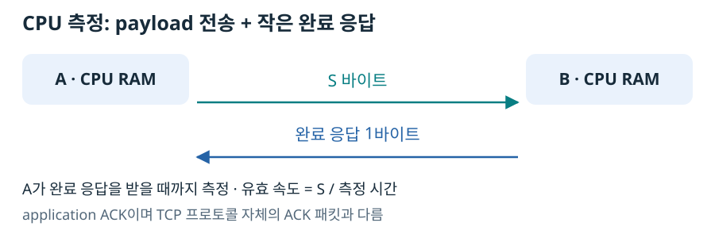
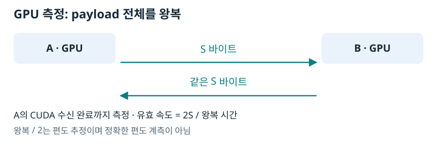

GPU 데이터를 서버 사이에 옮기는 데 오래 걸릴 때, 먼저 GPU를 제외한 네트워크 기준을 측정하면 병목 후보를 좁힐 수 있다. CPU 메모리 전송부터 이미 느리다면 GPU의 읽기·쓰기만을 원인으로 지목하기 어렵다. 다만 두 측정의 시작과 끝이 무엇인지는 맞춰 읽어야 한다.
CPU TCP: payload를 보내고 작은 완료 응답을 받는다
송신 측이 데이터를 보내고, 수신 측이 전체 바이트를 받은 뒤 1바이트 K를 되돌려 준다. 송신 측 한 시계에서 시작부터 이 응답 수신까지 측정한다.

이 응답은 측정 코드의 application ACK이며 TCP 자체 ACK 패킷과 다르다. payload 전체를 되돌려 받는 측정도 아니다. 수신 측은 ACK 후 데이터 값의 정확성을 검사하므로 그 검사가 다음 반복에 영향을 줄 수 있다.
방향·크기별 예열 2회, 측정 10회 평균이다. 유효 MB/s는 S ÷ 시간 ÷ 1,000,000이다.
| payload | A→B 평균(ms) | A→B MB/s | B→A 평균(ms) | B→A MB/s |
|---|---|---|---|---|
| 1 B | 0.227 | 0.004 | 0.252 | 0.004 |
| 4 KiB | 0.347 | 11.80 | 0.513 | 7.98 |
| 64 KiB | 2.142 | 30.60 | 3.786 | 17.31 |
| 1 MiB | 87.345 | 12.00 | 87.268 | 12.02 |
| 8 MiB | 698.916 | 12.00 | 699.054 | 12.00 |
원본: A 측정 (로컬 보존 자료: research/distributed_runtime_cross_node_transport/runs/archive-a/full-20261010/tcp-rank0.json), B 측정 (로컬 보존 자료: research/distributed_runtime_cross_node_transport/runs/archive-b/full-20261010/tcp-rank1.json).
큰 데이터에서 약 12 MB/s가 나온다. 서비스 안내 100 Mbps를 바이트로 바꾸면 12.5 MB/s다. 작은 메시지의 버스트나 버퍼 효과로 64 KiB 결과가 이 값을 넘었다고 지속 가능한 회선 속도가 30 MB/s라고 판단하지 않는다. 1바이트 시간도 편도 지연이 아니라 요청·완료 응답 왕복 성격의 관측이다.
GPU NCCL: 같은 payload를 되돌려 받는다
GPU 버퍼를 NCCL Socket으로 송수신한다. B는 수신 CUDA 작업이 완료된 뒤 같은 내용을 A에 돌려준다. A도 최종 수신 완료를 기다린다.

핵심 실행은 다음과 같다. 정확성 검사와 시작 전 barrier는 측정 구간 밖이다. 전체 코드 (로컬 보존 자료: research/distributed_runtime_cross_node_transport/experiments/transport.py).
if rank == 0:
dist.send(values, dst=1)
torch.cuda.synchronize()
dist.recv(values, src=1)
torch.cuda.synchronize()
else:
dist.recv(values, src=0)
torch.cuda.synchronize()
dist.send(values, dst=0)
torch.cuda.synchronize()
| GPU payload | 왕복 평균(ms) | 왕복÷2(ms) | 유효 MB/s: 2S/왕복 |
|---|---|---|---|
| 4 KiB | 0.913 | 0.456 | 8.98 |
| 64 KiB | 5.174 | 2.587 | 25.33 |
| 1 MiB | 88.821 | 44.410 | 23.61 |
| 8 MiB | 1297.395 | 648.698 | 12.93 |
각 크기 예열 2회·측정 10회이며 양쪽 값 7을 검증했다. A 시간 원본 (로컬 보존 자료: research/distributed_runtime_cross_node_transport/runs/archive-a/full-20261010/gpu-pingpong-rank0.json), B 정확성 기록 (로컬 보존 자료: research/distributed_runtime_cross_node_transport/runs/archive-b/full-20261010/gpu-pingpong-rank1.json).
왜 왕복을 재는가
서로 다른 서버의 시계를 직접 빼면 시계 동기화 오차가 섞일 수 있다. 왕복은 A의 한 시계로 ‘상대가 받고, 돌려주고, 내가 받은 완료’까지 관측한다.
모델 계산이 항상 같은 데이터를 왕복시켜야 한다는 뜻은 아니다. P/D의 KV payload는 주로 제공 측→수신 측으로 흐른다. PP도 주된 중간 벡터는 앞 단계→뒤 단계로 흐르며, 결과·제어 정보의 반환과 payload 전체 echo는 다르다.
왕복÷2는 경로 대칭성을 가정한 편도 추정이다. 정확한 편도 계측값이 아니다. 2S/왕복은 양방향으로 전달한 유효 payload를 시간으로 나눈 값이며 NIC의 양방향 동시 처리 한계, GPU HBM 대역폭, AllReduce BusBW가 아니다.
무엇을 결론 낼 수 있는가
CPU의 큰 전송 약 12 MB/s와 GPU의 큰 왕복 유효 약 12.93 MB/s는 네트워크가 중요한 제한일 가능성과 일관된다. GPU 전달이 느리다는 이유만으로 GPU 메모리 읽기·쓰기가 느리다고 결론 낼 수 없다.
그렇다고 GPU 복사 비용이 0임을 증명한 것도 아니다. CPU 측은 1바이트 ACK, GPU 측은 전체 echo이고 라이브러리·버퍼링·완료 경계가 다르다. 두 평균을 단순히 빼는 것은 GPU 복사 시간 분해가 아니다.
처음 두 Broadcast를 각 Rank에서 재던 gpu-rank*.json은 동일한 왕복 완료 경계가 아니어서 기준 결과에서 제외했다. 원본은 유지하고, 위 send/recv 방식으로 재측정한 gpu-pingpong-rank*.json을 채택했다.
전송 비용을 확인했다면 실제 모델이 보내는 데이터에 연결할 차례다. P/D와 PP의 실행 구조는 같은 경로에서도 전송량과 빈도가 달라지는 이유를 설명한다.